Manizales, Colombia
Tour al Eje Cafetero
La región de montañas verdes cubiertas de cafetales, pueblos coloridos de arquitectura paisa y paisajes declarados Patrimonio de la Humanidad.
La región de montañas verdes cubiertas de cafetales, pueblos coloridos de arquitectura paisa y paisajes declarados Patrimonio de la Humanidad.
Acompañanos a un tour de 6 días 5 noches, Hospedaje en Hotel Balsora Boutique en el Eje Cafetero colombiano. Una región mágica famosa por sus verdes montañas y sus cultivos de café.
Declarada Patrimonio de la Humanidad por la UNESCO, ofrece pueblos coloniales coloridos,
el Valle del Cocora con sus altas palmas de cera y parques temáticos.
Disfrutarás de un clima templado y de la gran amabilidad de su gente.
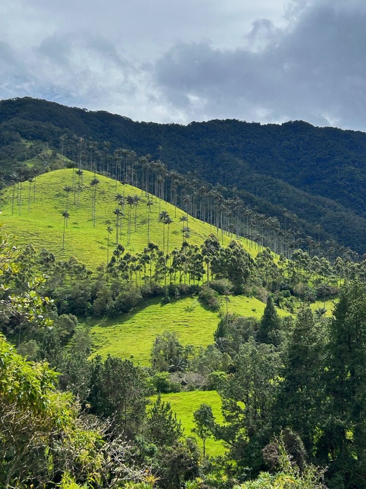
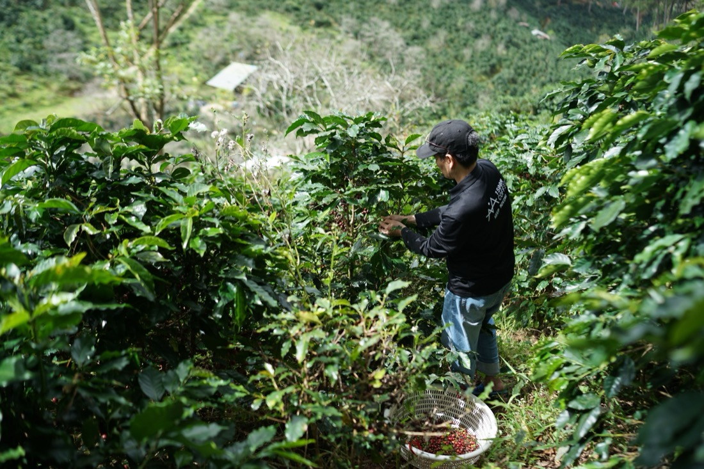
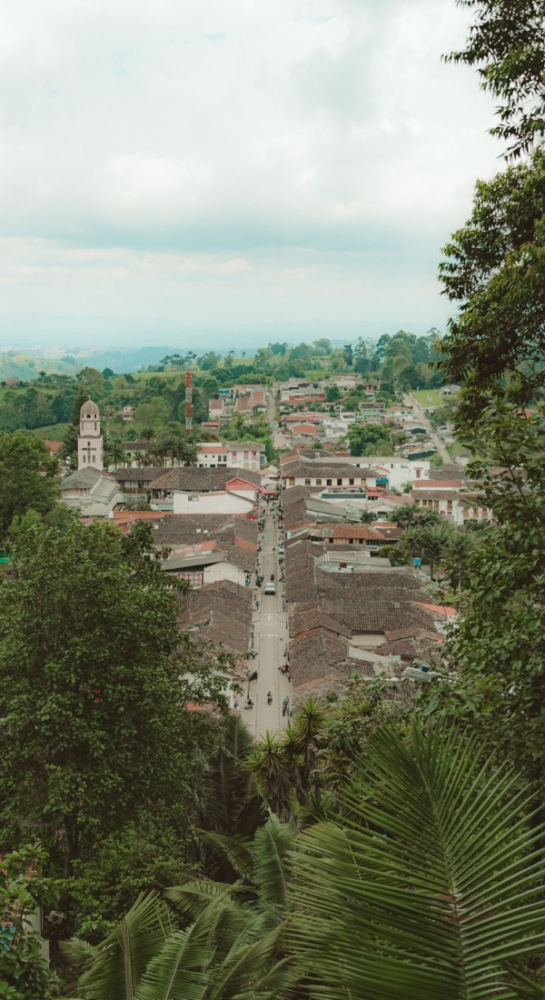
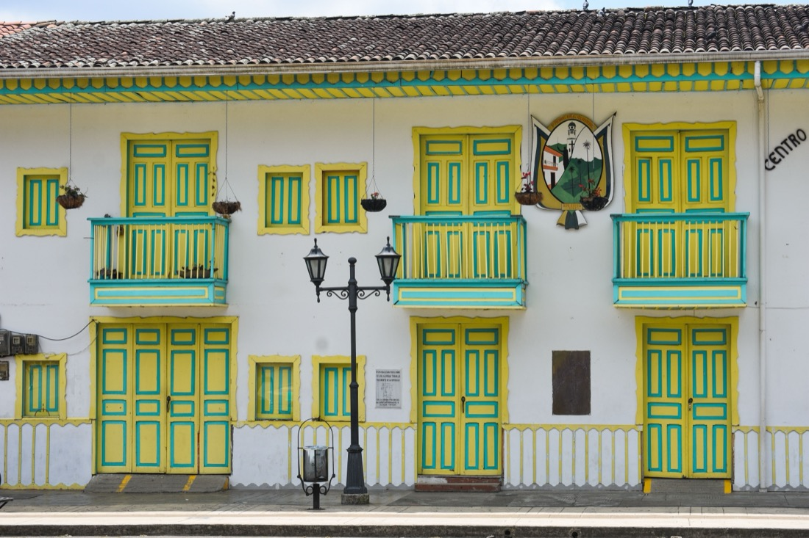
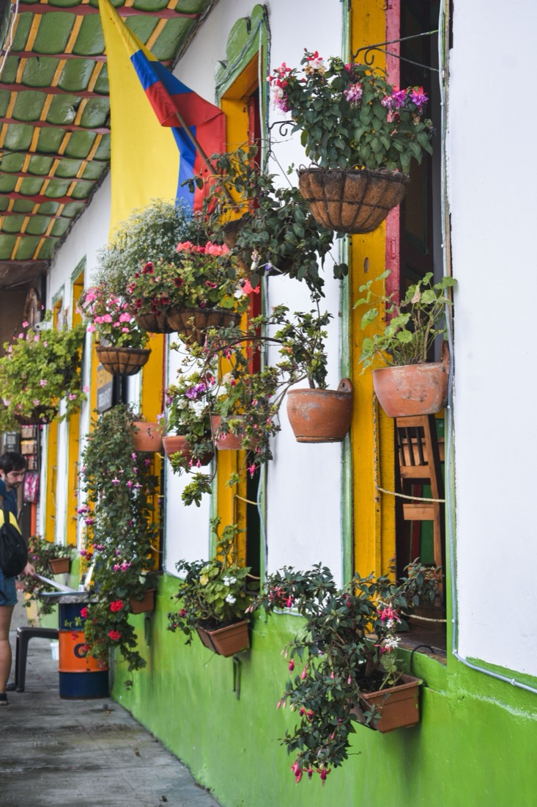
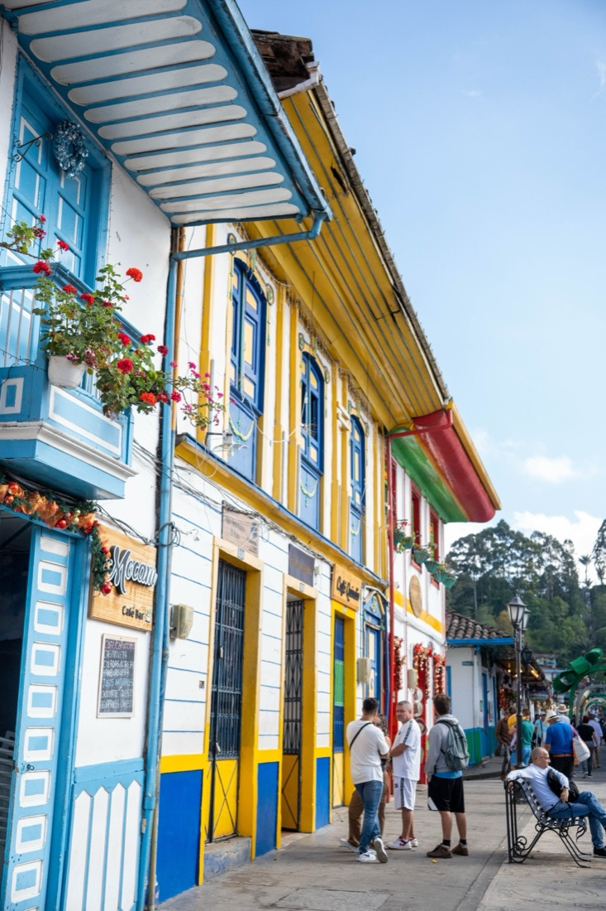
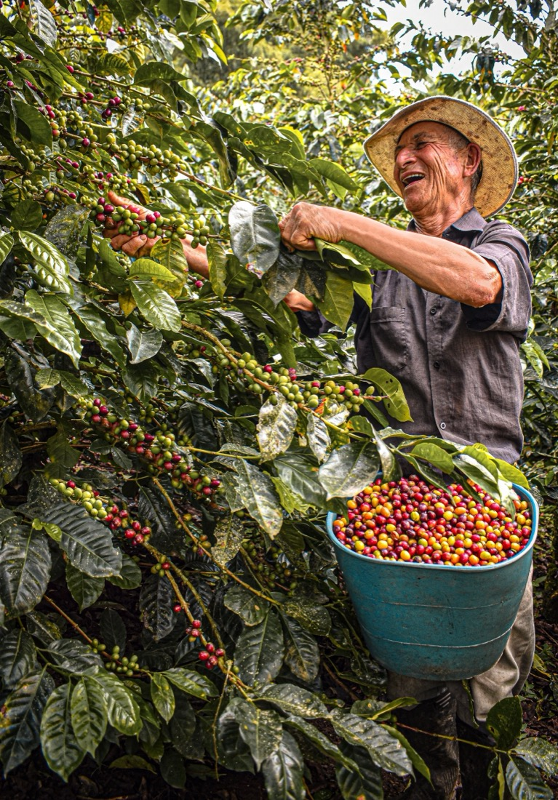
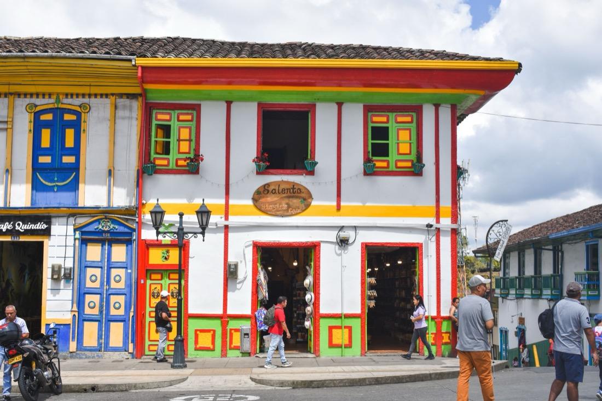
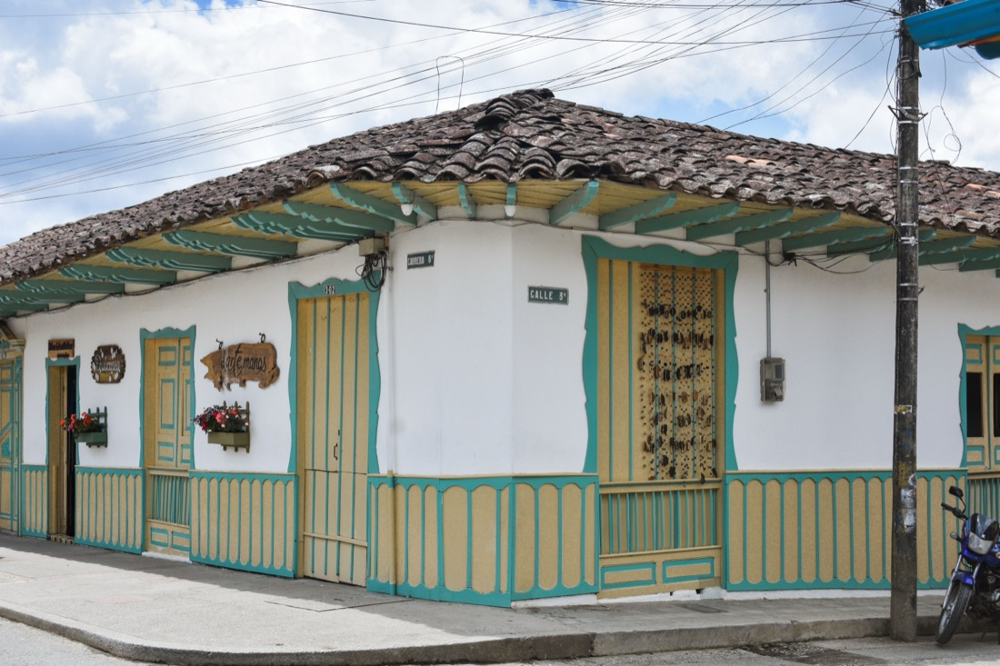
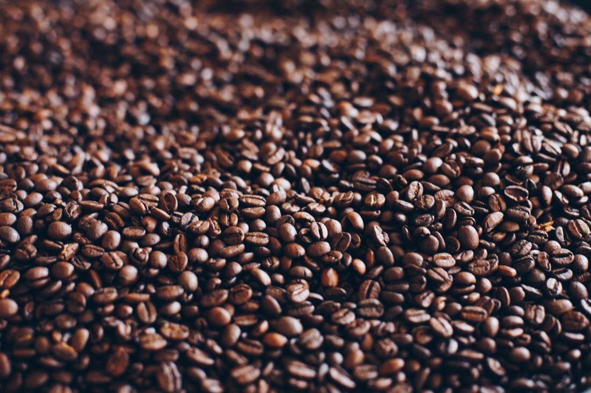
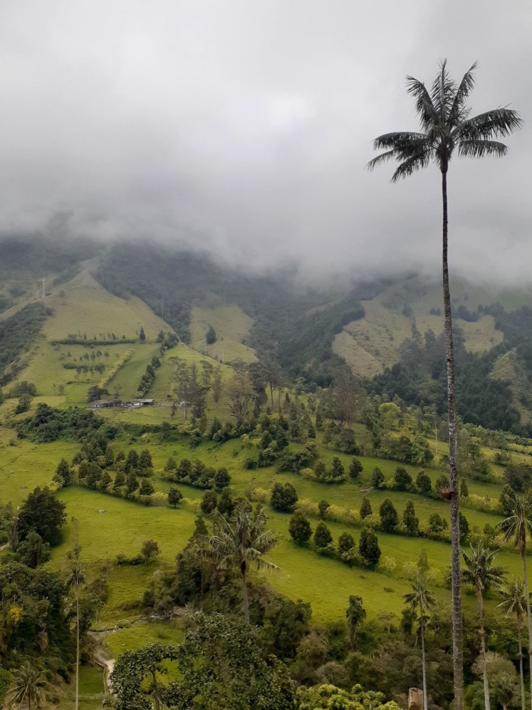

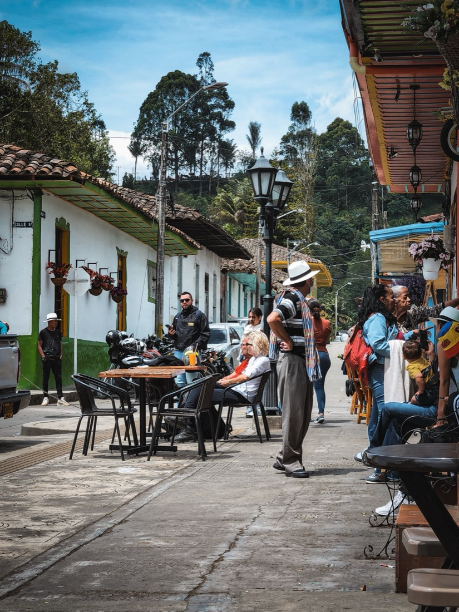
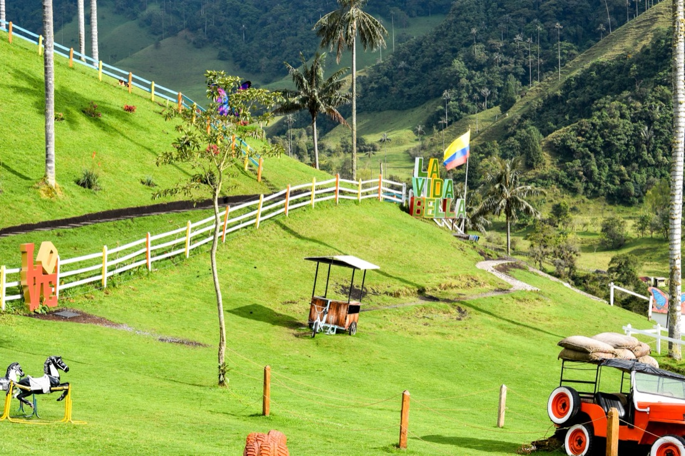
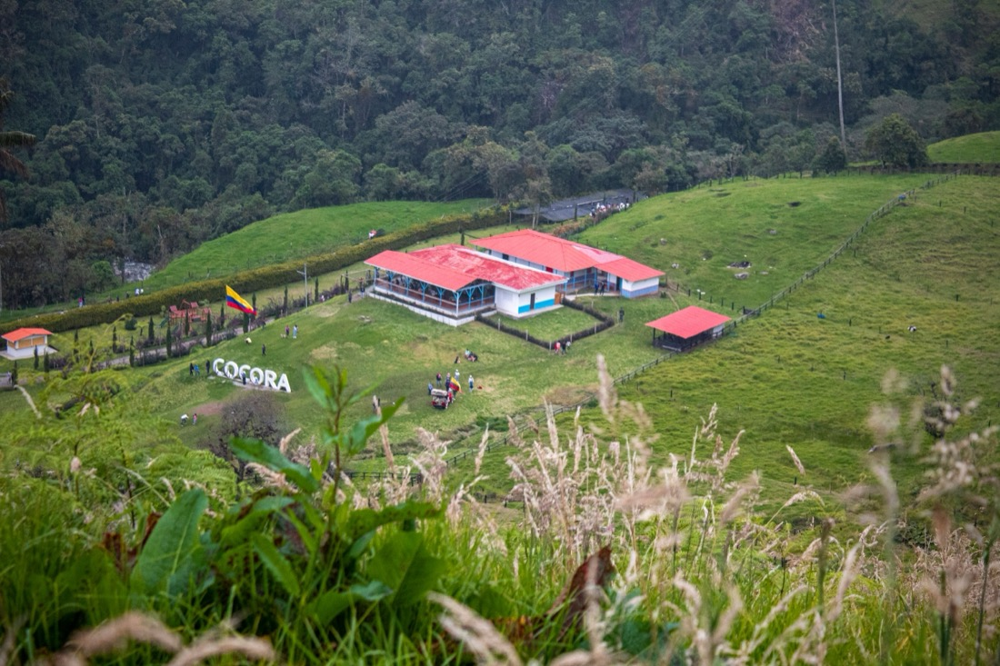


Copyright © 2024 Mastertouch. All rights reserved.